Unstructured financial information and ballooning volumes of social media content, news, and data requires increasing amounts of time and effort to organize and interpret.
Research analysts tasked with understanding, modeling, and forecasting market behavior need a research tool capable of reducing the time spent wading through this information to find relationships.
We were trying to identify opportunities in financial industry where we can place Watson discover capabilities to drive insights from unstructured data.
My role is interaction designer and prototyper. I partnered with a user researcher and a visual designer for this project.
Research
We conducted desktop research to understand the ecosystem of financial industry, and how each player is interacting with each other.
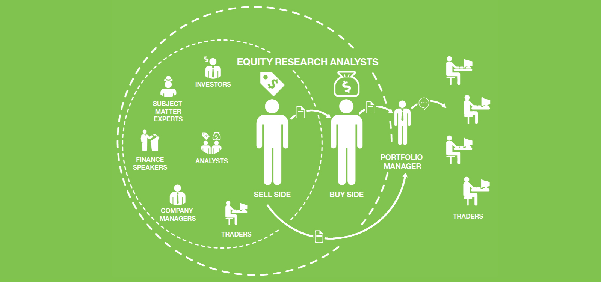
We decided to focus on equity analyst. And generate persona as following.
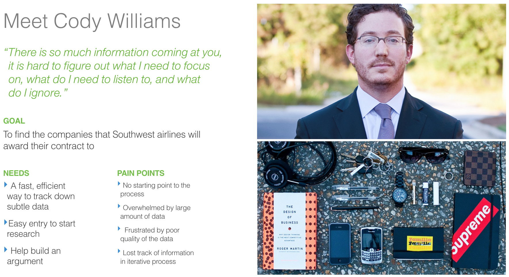
We interviewed 5 financial analysts and combined a lot of secondary research found online to understand the journey of analyst's research process.
After the research, we identified three biggest pain points in financial analysts's research process:
NO STARTING POINT
“I might read a random magazine that is laying down the house, and look into the brand in the advertisement."
“There are tons of ways to do research."
“My hypothesis is very generic."
MASS QUANTITY OF DATA
“The data can be wrong."
“The hard data is easy to access but challenged to boil it down."
“I spent most of my time just researching. I'm overwhelmed by the volume of the data."
DIFFICULTY OF FINDING RELATIONSHIPS
“We need to identify a trend that no one else have identified."
“Read the situation, not just the data."
“Read a lot of stuff but don't know how to relate to work."
Define project goals
After understanding financial industry domain, financial analyst and how they do research. We tried to come up three hills. Hills, defined by IBM design thinking process, turn users' needs into project goals, helping the team align around a common understanding of the intended outcomes to achieve.
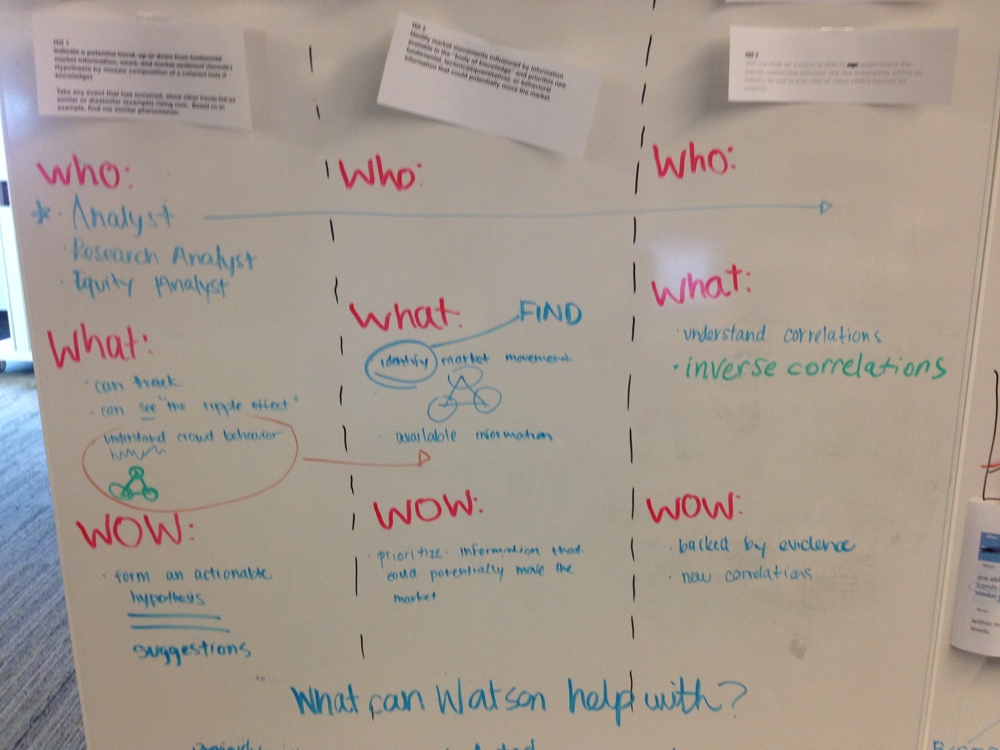
Three hills we identified are:
An equity analyst is able to find relevant evidence in order to support or refute a financial forecast in minutes as opposed to days or weeks.
An equity analyst is able to find relevant evidence explaining securities phenomena for a 1000 securities in less than 10 minutes.
An equity analyst is able to posit a hypothetical cause and investigate the potential effects on the securities market based on relevant evidence within minutes.
Design
We began to sketch interaction solutions for the hills we identified.
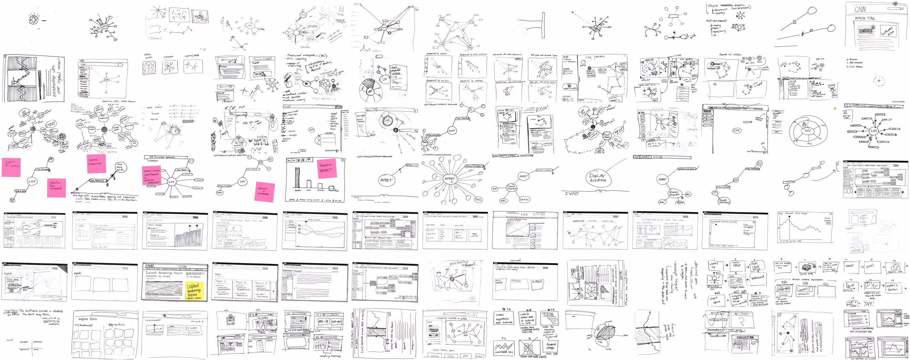
We showed the concept sketches to sponsor users to get feedback and iteratively designed them. The final design screenshots are as following, and I made an interactive prototype using AngularJS.
Painpoint addressed: No starting point to the process.
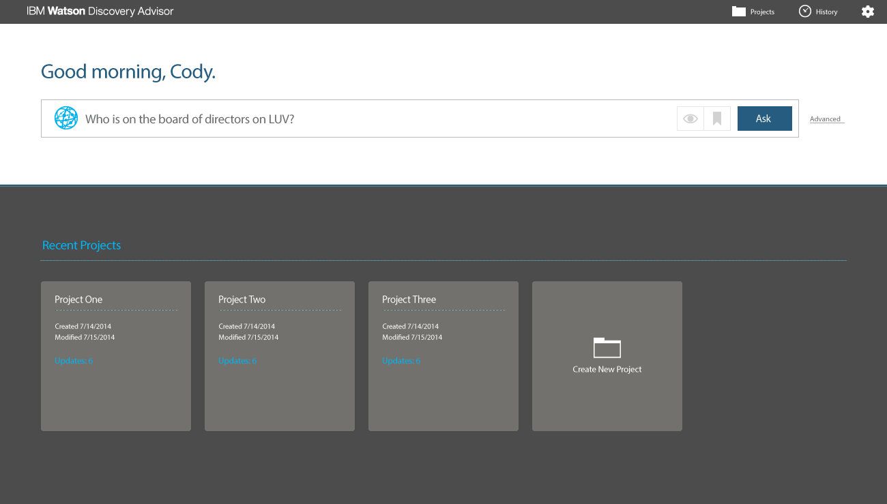
Ask a natural language question
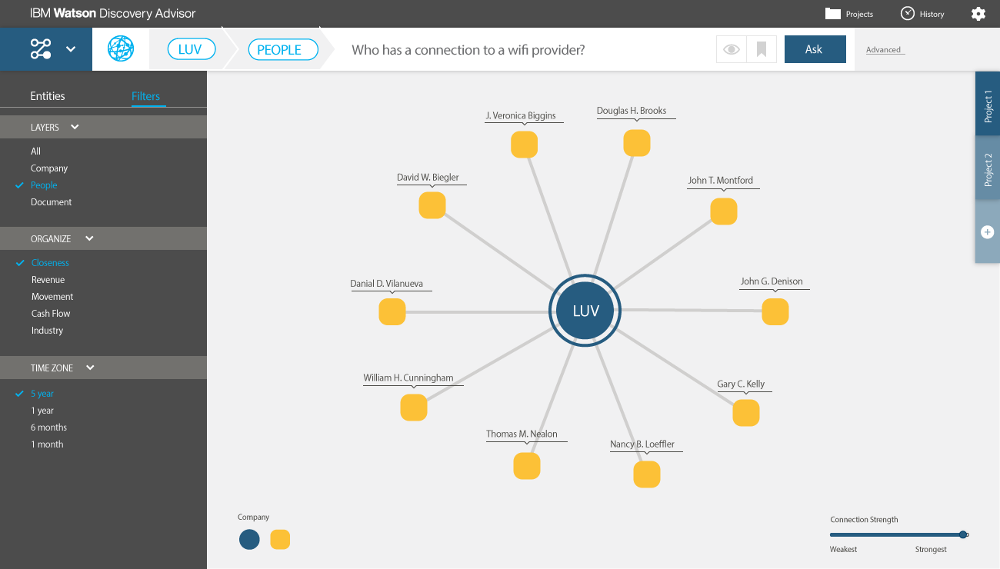
The system will define where you could start
Painpoint addressed: Overwhelmed by large amount of data.
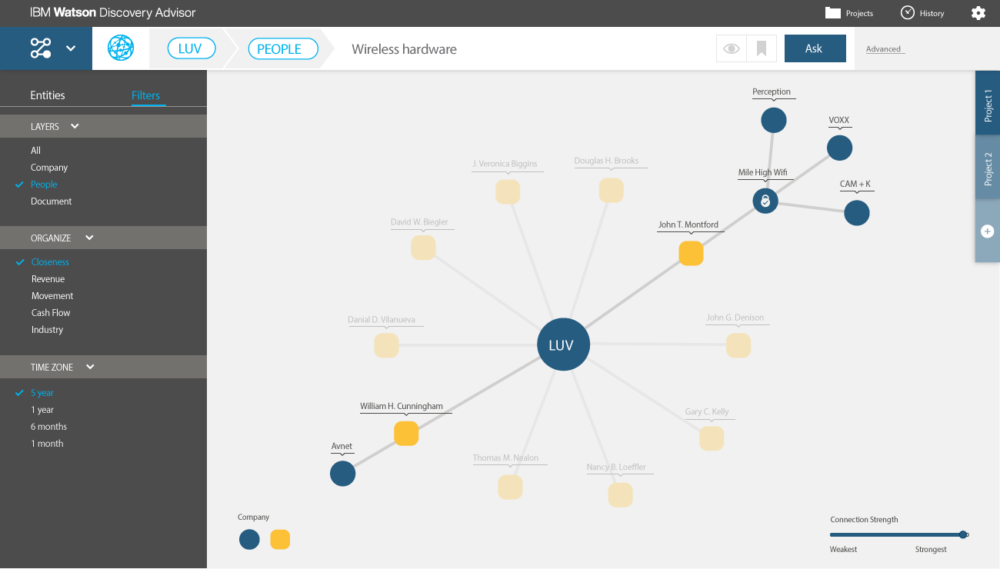
The size of the network visualization is under control.
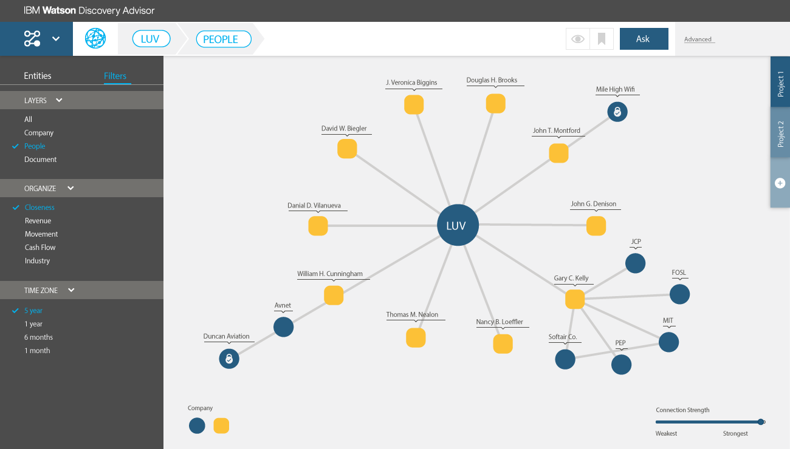
The size of the network visualization is under control.
Painpoint addressed: Frustrated by poor quality of the data.
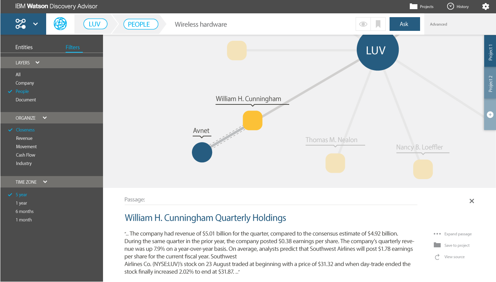
Investige relationship between nodes
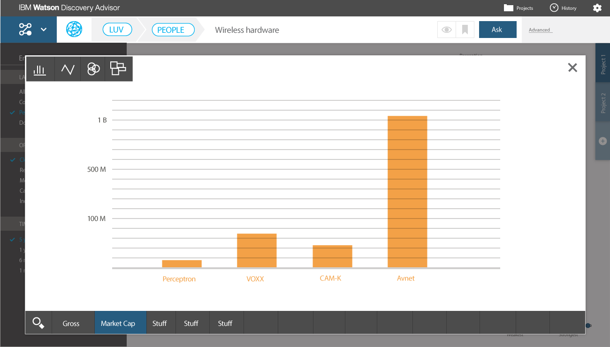
Compare nodes' quantitative information
Painpoint addressed: Lost track of information in iterative process.
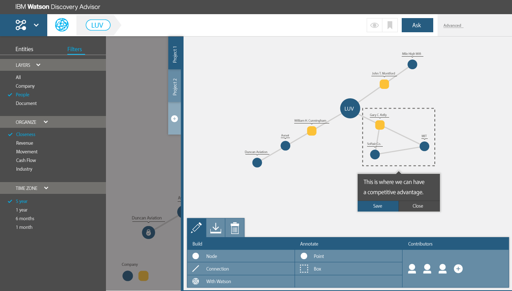
Annotate network relationship
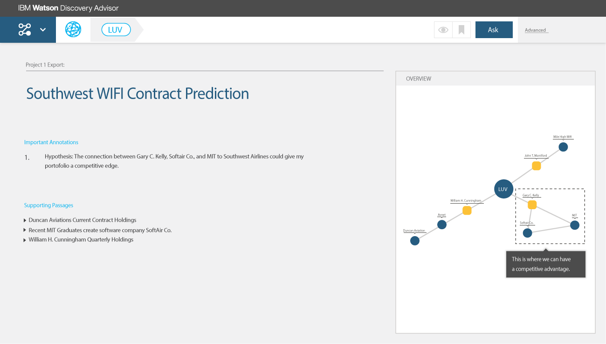
Generate report and research hypothesis
Impact
Similar effort has spent on legal, media and engineering industry, which has helped Watson build strategic partnerships with other companies and brought in millions of revenues.